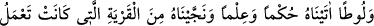
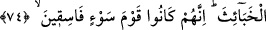

ilhamla sâdır olacağına ve insan nefsinin dâimâ kötülüğü emredici olduğuna işârettir.”
Bil ki bu âyetlerin son taraflarında ihlâs ehline ibâre ile, diğerlerine ise işâret ile
dikkat çekmektedir. Bunlardan ilki, mutlak kuldur. İkincisi ise hevâsının ve dünyasının
kuludur. Bir hadiste şöyle buyrulmuştur: “Dirhemin kulu helâk olsun, dînârın kulu
helâk olsun.”[190] Hadiste özellikle bu ikisi zikredilmiştir. Çünkü, Allah’tan başkasına
kul-köle olma bakımından insanların en çok yanıldıkları şeyler bunlardır.
Yahya b. Muâz şöyle demiştir: “İnsanlar üç sınıftır: Âhireti, kendisini dünyalık
maîşetinden alıkoyan kimse, dünya maîşeti, kendisini âhiretinden alıkoyan kimse ve
bunların her ikisi ile de meşgul olan kimse. Bunlardan birincisi âbidlerin, ikincisi
hâliklerin/helâk olanların, üçüncü ise kendisini tehlikeye atanların derecesidir.
Mesnevî’de der ki:
İnsanın her işte eli vardır
Fakat ondan beklenen hizmet ve ibâdettir
Böylece o ayna cilâlanır
İbâdetle gönle bir arınma gelir
Çabala, nurun parlaklaşsın
Sülûk ve hizmetin kolay gelsin
Bağı çöz, hür ol ey oğul
Daha ne kadar gümüş ve altının derdinde olacaksın?
Hakk’ı görmek nasîbi olanın gözünde
Bu dünya murdardır
Doğan, beyaz ve benzersiz olsa bile
Avı fare olduğundan aşağılıktır
74. Lût’a gelince, ona da hüküm (hakimlik, peygamberlik, hükümdarlık) ve ilim
verdik; onu, çirkin işler yapmakta olan memleketten kurtardık. Zira onlar (o
memleketin halkı), gerçekten fena işler yapan kötü bir kavimdi.
“Lût’a gelince, ona da hüküm ve ilim verdik.”
Âyetteki “hüküm” kelimesi, et-Te’vîlâtü’n-Necmiyye’de “hakîkî hikmet”; Bahru’l-
ulûm’da “yapılması gereken şey”; Celâleyn’de ise “hasımların arasını hak ile bulmak”
olarak tefsir edilmiştir.
Fakir (Bursevî) der ki: Hüküm, hikmetten daha umûmî olsa da peygamberler hakkında
çoğunlukla hikmet anlamındadır. Nitekim Yahya (a.s.) hakkındaki “Biz ona daha
çocukken hüküm verdik…” (Meryem, 19/12) âyeti buna delâlet etmektedir. Buradaki